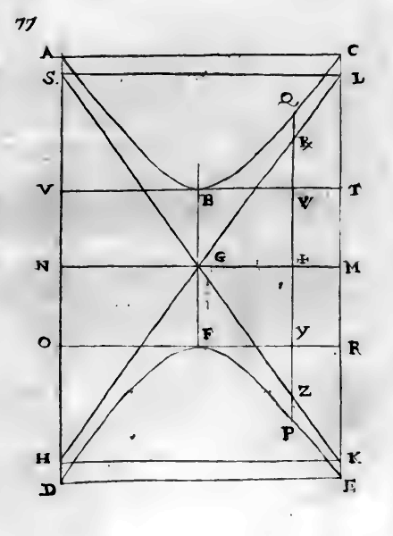

Propositio X · Theorema X (Annulus Hyperbolicus)¶


PROP. X. THEOR. X. (tab. 9. fig. 77, pp. 74–75)
Annulus hyperbolicus, cuius sectio per axem sint oppositae sectiones subsesquialter est cylindri eius, cuius altitudo est eadem annuli, basis verò circulus ille genitus ex asymptotorum conuersione, cuius circumferentia, & annuli ora sunt in eodem plano, atque concentrica.
Circa eundem axem MN intelligantur haec solida rotunda (in marg. tab. 9. fig. 77.), cylindri nempe, quorum per axem rectangula sint CD, LH, TO; coni duo, quorum per axem triangula LGK, SGH; & demum annulus hyperbolicus, cuius sectio per axem sint oppositae sectiones CBA, EFD, quarum asymptoti LGH, KGS, easque contingant in punctis BF rectae TBV, RFO; Dico annulum hunc subsesquialterum esse cylindri LH. Ab assumpto quolibet puncto ✠ agatur planum aequidistans circulo, cuius diameter recta LK, secans cylindrum TO, conum LGK, & tympanum hyperbolicum CBADFE; erunt sectiones circuli, quorum diametri existent in eodem plano parallelogrammi CD, Y, Z, QP. Quoniam igitur rectangulum CKE aequale est quadrato GF, hoc est MK (in marg. 11. secundi conic.); rectangulum verò CKE vnà cum quadrato MK, aequale est quadrato ME; erit quadratum MR vnà cum quadrato MK, aequale quadrato ME, & eorum dupla; quare circulus, cuius diameter TR, vnà cum illo, cuius diameter LK, aequalis erit circulo, cuius diameter CE; & eadem prorsus ratione circulus, cuius diameter VO, vnà cum circulo, cuius diameter SH aequalis erit circulo, cuius diameter AD. Rursus rectangulum QZP, hoc est quadratum GF, imò ipsum Y aequale est simul cum quadrato Z quadrato P, ergo circulus, cuius diameter Y, vnà cum illo, cuius diameter Z aequalis erit circulo, cuius diameter QP; circulus verò BF est communis vtrique solido cylindri, nempe TO, & praedicto Tympano; ergo cum constet, quod circuli omnes cylindri TO, vnà cum omnibus duorum conorum LGK, SGH, sint aequales circulis omnibus tympani hyperbolici CBADFE, erit tympanum istud aequale cylindro TO, vnà cum duobus conis LGK, SGH; sed cylindrus TO aequalis est differentiae
f. 0092 · p. 75cylindrorum LH, CD; & duo coni SGH, LGK tertia pars sunt simul accepti cylindri LH; Tympanum igitur praedictum aequale erit tertiae parti cylindri LH, vnà cum differentia cylindrorum CD, LH; & ideò excessus, quo cylindrus CD superat aggregatum tertiae partis cylindri LH, & differentiae cylindrorum CD, LH, qui excessus est \(\frac{2}{3}\) cylindri LH, aequalis erit annulo hyperbolico CBA, DFE, quod &c.